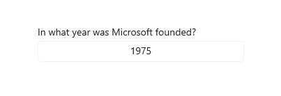
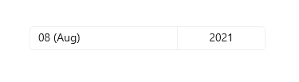

Date picker
The date picker gives you a standardized way to let users pick a localized date value using touch, mouse, or keyboard input.

Is this the right control?
Use a date picker to let a user pick a known date, such as a date of birth, where the context of the calendar is not important.
If the context of a calendar is important, consider using a calendar date picker or calendar view.
For more info about choosing the right date control, see the Date and time controls article.
Examples
The entry point displays the chosen date, and when the user selects the entry point, a picker surface expands vertically from the middle for the user to make a selection. The date picker overlays other UI; it doesn't push other UI out of the way.

Create a date picker
- Important APIs: DatePicker class, SelectedDate property
The WinUI 3 Gallery app includes interactive examples of most WinUI 3 controls, features, and functionality. Get the app from the Microsoft Store or get the source code on GitHub
This example shows how to create a simple date picker with a header.
<DatePicker x:Name="exampleDatePicker" Header="Pick a date"/>
DatePicker exampleDatePicker = new DatePicker();
exampleDatePicker.Header = "Pick a date";
The resulting date picker looks like this:
Formatting the date picker
By default, the date picker shows the day, month, and year. If your scenario for the date picker doesn't require all the fields, you can hide the ones you don't need. To hide a field, set its corresponding fieldVisible property to false: DayVisible, MonthVisible, or YearVisible.
Here, only the year is needed, so the day and month fields are hidden.
<DatePicker x:Name="yearDatePicker" Header="In what year was Microsoft founded?"
MonthVisible="False" DayVisible="False"/>

The string content of each ComboBox in the DatePicker is created by a DateTimeFormatter. You inform the DateTimeFormatter how to format the date value by providing a string that is either a format template or a format pattern. For more info, see the DayFormat, MonthFormat, and YearFormat properties.
Here, a format pattern is used to show the month as an integer and abbreviation. You can add literal strings to the format pattern, such as the parentheses around the month abbreviation: ({month.abbreviated}).
<DatePicker MonthFormat="{}{month.integer(2)} ({month.abbreviated})" DayVisible="False"/>

Date values
The date picker control has both Date/DateChanged and SelectedDate/SelectedDateChanged APIs. The difference between these is that Date is not nullable, while SelectedDate is nullable.
The value of SelectedDate is used to populate the date picker and is null by default. If SelectedDate is null, the Date property is set to 12/31/1600; otherwise, the Date value is synchronized with the SelectedDate value. When SelectedDate is null, the picker is 'unset' and shows the field names instead of a date.
You can set the MinYear and MaxYear properties to restrict the date values in the picker. By default, MinYear is set to 100 years prior to the current date and MaxYear is set to 100 years past the current date.
If you set only MinYear or MaxYear, you need to ensure that a valid date range is created by the date you set and the default value of the other date; otherwise, no date will be available to select in the picker. For example, setting only yearDatePicker.MaxYear = new DateTimeOffset(new DateTime(900, 1, 1)); creates an invalid date range with the default value of MinYear.
Initializing a date value
The date properties can't be set as a XAML attribute string, because the Windows Runtime XAML parser doesn't have a conversion logic for converting strings to dates as DateTime / DateTimeOffset objects. Here are some suggested ways these objects can be defined in code and set to a date other than the current date.
- DateTime: Instantiate a Windows.Globalization.Calendar object (it is initialized to the current date). Set Year, or call AddYears, to adjust the date. Then, call Calendar.GetDateTime and use the returned
DateTimeto set the date property. - DateTimeOffset: Call the constructor. For the inner System.DateTime, use the constructor signature. Or, construct a default DateTimeOffset (it is initialized to the current date) and call AddYears.
Another possible technique is to define a date that's available as a data object or in the data context, then set the date property as a XAML attribute that references a {Binding} markup extension that can access the date as data.
Note
For important info about date values, see DateTime and Calendar values in the Date and time controls article.
This example demonstrates setting the SelectedDate, MinYear, and MaxYear properties on different DatePicker controls.
<DatePicker x:Name="yearDatePicker" MonthVisible="False" DayVisible="False"/>
<DatePicker x:Name="arrivalDatePicker" Header="Arrival date"/>
public MainPage()
{
this.InitializeComponent();
// Set minimum year to 1900 and maximum year to 1999.
yearDatePicker.SelectedDate = new DateTimeOffset(new DateTime(1950, 1, 1));
yearDatePicker.MinYear = new DateTimeOffset(new DateTime(1900, 1, 1));
// Using a different DateTimeOffset constructor.
yearDatePicker.MaxYear = new DateTimeOffset(1999, 12, 31, 0, 0, 0, new TimeSpan());
// Set minimum to the current year and maximum to five years from now.
arrivalDatePicker.MinYear = DateTimeOffset.Now;
arrivalDatePicker.MaxYear = DateTimeOffset.Now.AddYears(5);
}
Using the date values
To use the date value in your app, you typically use a data binding to the SelectedDate property, or handle the SelectedDateChanged event.
For an example of using a
DatePickerandTimePickertogether to update a singleDateTimevalue, see Calendar, date, and time controls - Use a date picker and time picker together.
Here, you use a DatePicker to let a user select their arrival date. You handle the SelectedDateChanged event to update a DateTime instance named arrivalDateTime.
<StackPanel>
<DatePicker x:Name="arrivalDatePicker" Header="Arrival date"
DayFormat="{}{day.integer} ({dayofweek.abbreviated})"
SelectedDateChanged="arrivalDatePicker_SelectedDateChanged"/>
<Button Content="Clear" Click="ClearDateButton_Click"/>
<TextBlock x:Name="arrivalText" Margin="0,12"/>
</StackPanel>
public sealed partial class MainPage : Page
{
DateTime arrivalDateTime;
public MainPage()
{
this.InitializeComponent();
// Set minimum to the current year and maximum to five years from now.
arrivalDatePicker.MinYear = DateTimeOffset.Now;
arrivalDatePicker.MaxYear = DateTimeOffset.Now.AddYears(5);
}
private void arrivalDatePicker_SelectedDateChanged(DatePicker sender, DatePickerSelectedValueChangedEventArgs args)
{
if (arrivalDatePicker.SelectedDate != null)
{
arrivalDateTime = new DateTime(args.NewDate.Value.Year, args.NewDate.Value.Month, args.NewDate.Value.Day);
}
arrivalText.Text = arrivalDateTime.ToString();
}
private void ClearDateButton_Click(object sender, RoutedEventArgs e)
{
arrivalDatePicker.SelectedDate = null;
arrivalText.Text = string.Empty;
}
}
UWP and WinUI 2
Important
The information and examples in this article are optimized for apps that use the Windows App SDK and WinUI 3, but are generally applicable to UWP apps that use WinUI 2. See the UWP API reference for platform specific information and examples.
This section contains information you need to use the control in a UWP or WinUI 2 app.
APIs for this control exist in the Windows.UI.Xaml.Controls namespace.
- UWP APIs: DatePicker class, SelectedDate property
- Open the WinUI 2 Gallery app and see the DatePicker in action. The WinUI 2 Gallery app includes interactive examples of most WinUI 2 controls, features, and functionality. Get the app from the Microsoft Store or get the source code on GitHub.
We recommend using the latest WinUI 2 to get the most current styles and templates for all controls. WinUI 2.2 or later includes a new template for this control that uses rounded corners. For more info, see Corner radius.